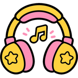
Audio only
MP3, M4A, Opus or FLAC, or the video plus its soundtrack as a separate file.
Free · Open source · No ads
Save video, audio and subtitles from TikTok, YouTube, Instagram, Pinterest and 1,800+ other sites. Beautifully simple, on your phone and on your computer.
Android 7.0+, macOS 12+ and Windows 10+.

1,800+
sites. One paste.
TikTok, YouTube, Instagram, Pinterest, X, Facebook, Vimeo, SoundCloud and the long tail, powered by yt-dlp.
Preview and trim
Play the video before you save it. Turn on Save only a part and drag the yellow ends of the filmstrip. You see the exact frame you're cutting at, and Grab downloads just that clip.
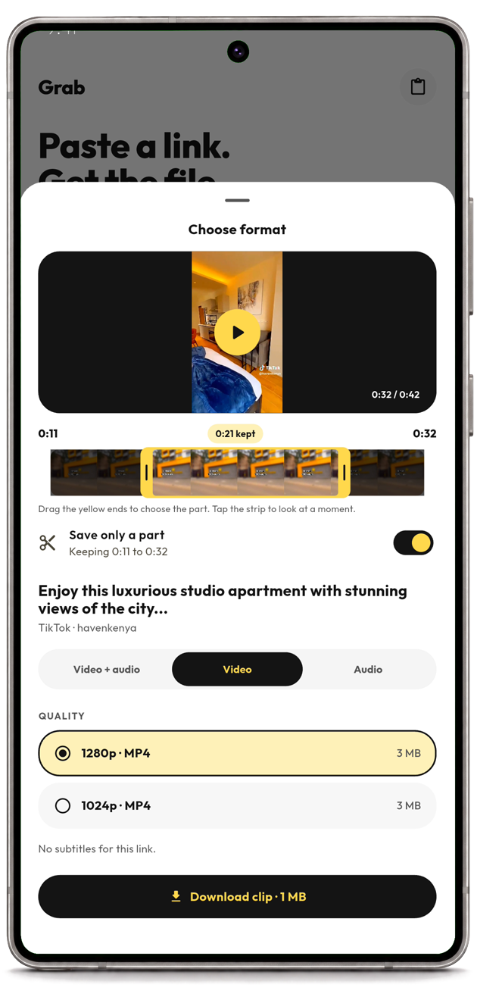
Downloads that don't give up
Live percent, speed and time left. Pause any download and resume it later. If the connection drops, Grab waits and tries again by itself.
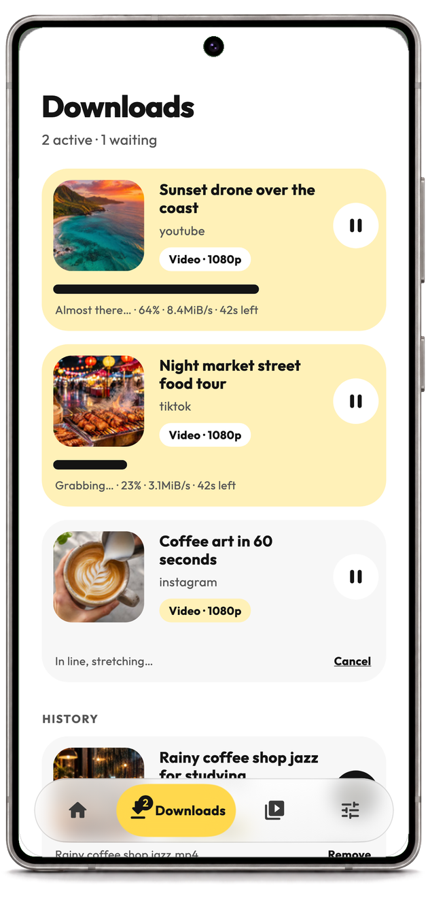
Your library
Sort by date, size or site. Group by platform. Pick several to share or delete. Audio gets one of fifty line-drawn covers, and plays in the background with lock-screen controls.

New in Grab 1.1
Streaks, badges and a little yellow buddy who cheers you on. A pal who finds anything you saved. And your year, wrapped.
Grab Club
Earn XP for saving, trimming and sharing. Level up from Clipper to Legend, keep a daily streak with a free weekly freeze, and collect 24 hand-drawn badges, from Night Owl to Globetrotter. Prefer it quiet? One switch turns it all off.
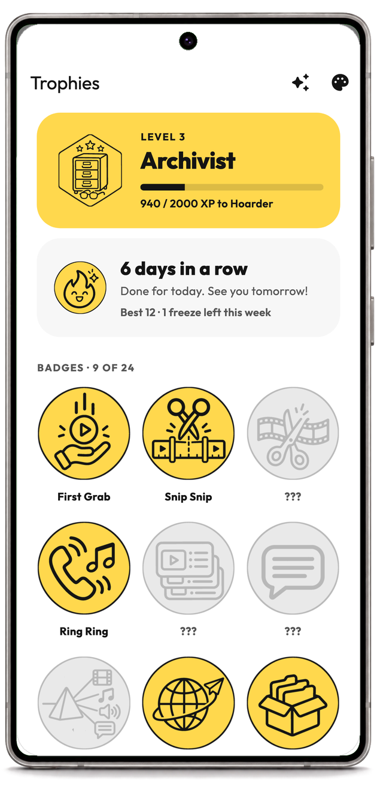
Make it yours
The Grab buddy lives on your dock. It cheers when a file saves, naps after midnight and pops on headphones when you grab a song. Earn hats, confetti styles, sound packs and animated docks, and try anything on before it's yours.
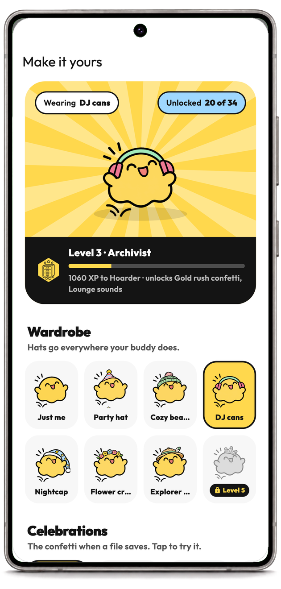
Grab Pal
Can't remember the title? Tap the buddy and say what you're after, typos and all. "That rainy cofee jazz" is enough. Add your own Groq key for smarter answers; only titles and sites are sent, never your files.
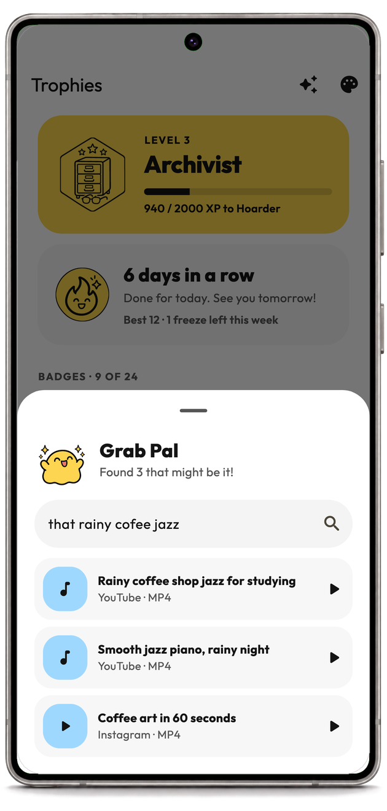
Grab Wrapped
Every December, a story of your year: files saved, top sites, your busiest month and your Grab personality, with stickers and motion on every card. It ends in a poster made for Stories.
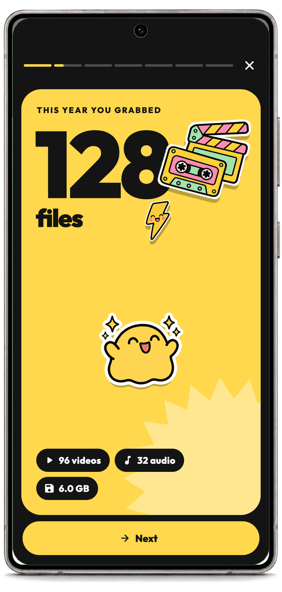
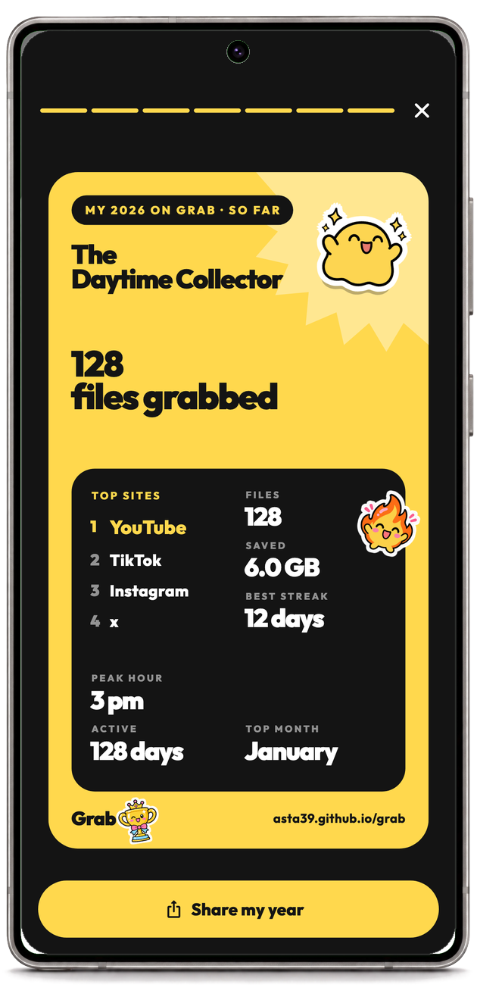
GIFs and stickers
Pick a moment from any saved video and turn it into a looping GIF, or a 512 × 512 sticker that lands in WhatsApp as a sticker. Both go straight to your gallery.
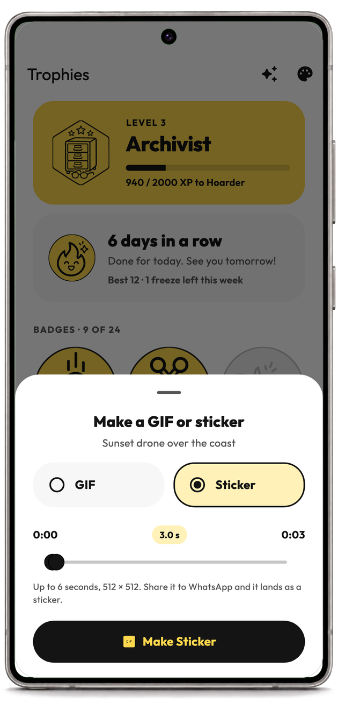

MP3, M4A, Opus or FLAC, or the video plus its soundtrack as a separate file.
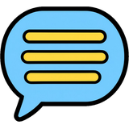
Save as .srt files or embed them right into the video.
Paste a playlist or channel and pick exactly which items to grab.
Cut up to 40 seconds of any file and set it as your ringtone.
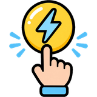
Share to Grab, use the Quick Settings tile, or tap “Grab it” on a copied link.
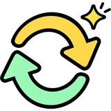
The engine updates itself daily, and new versions install over the old one.
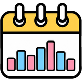
A recap card every weekend: grabs per day, your top site and your streak.
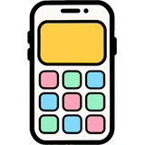
Your buddy, your streak and a one-tap grab, right on your home screen.
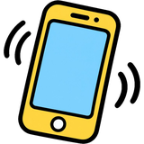
Copy a link, shake your phone, and Grab fetches it.
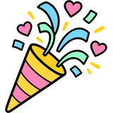
Hearts, popcorn, gold coins or a rain of tiny buddies when a file saves.
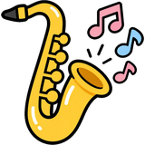
Pizzicato, steel drums, smooth sax and more for every save and unlock.
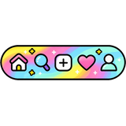
Night sky, lava lamp, aurora, holo foil and a sticker bomb.
Grab talks only to the sites you download from, and to GitHub when it checks for updates. Your downloads and history never leave your device. The code is open for anyone to read.
Free forever. GPL-3.0 licensed.
Android 7.0 and newer. Most phones need the arm64 build.
Download APKApple silicon and Intel. The same Grab, built for your Mac.
Download for MacWindows 10 and 11. Paste a link, get the file.
Download for WindowsYes. No subscriptions, no ads, no paid tiers. It's open-source software under the GPL-3.0 licence.
Google Play doesn't allow apps that download from YouTube. Grab is published on GitHub, with F-Droid on the way. Updates install from inside the app.
Anything yt-dlp supports: over 1,800 sites. Some private or age-restricted content needs a login and won't work yet.
Sites change often. Grab updates its engine daily; you can also tap Check for engine update in Settings. Still stuck? Report it with the link.
Download only what you have the right to save, and respect creators and each site's terms. Grab isn't affiliated with any site it supports.
Every version of Grab, and what came with it.
Find what's new, tell us what's wrong, and keep your progress safe.
The fun update: Grab Club, a buddy who cheers you on, and new ways to use what you save.
The first release: paste a link, get the file.